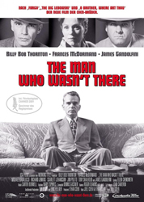
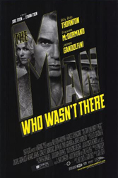
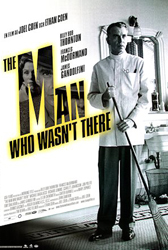
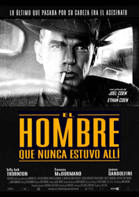
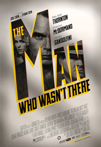

Billy Bob Thornton
Frances McDormand
Michael Badalucco
Jon Polito
James Gandolfini
Katherine Borowitz
Christopher Kriesa
Brian Haley
Scarlett Johansson
Richard Jenkins
Tony Shalhoub
Jack McGee
Adam Alexi-Malle
Nicholas Lanier
Lilyan Chauvin
Christopher McDonald
Jennifer Jason Leigh (uncredited)
George Ives
Roger Deakins
1949, Santa Rosa, California. A laconic, chain-smoking barber with fallen arches tells a story of a man trying to escape a humdrum life. It's a tale of suspected adultery, blackmail, foul play, death, Sacramento city slickers, racial slurs, invented war heroics, shaved legs, a gamine piano player, aliens and Heisenberg's Uncertainty Principle. Ed Crane cuts hair in his in-law's shop; his wife drinks and may be having an affair with her boss, "Big Dave", who has $10,000 to invest in a second department store. Ed gets wind of a chance to make money in dry cleaning. Blackmail and investment are his opportunity to be more than a man no one notices. Settle in the chair and listen.
The film was inspired by a poster that showed various haircuts from the 1940s; the Coen brothers had seen it while filming The Hudsucker Proxy.
Though original intended to be released in black and white, the movie was originally shot in colour. Some countries released the movie in colour (e.g. Japan) for marketing reasons. Both versions are released on home media.
Joel Coen won the Best Director Award at the 2001 Cannes Film Festival, sharing the prize with David Lynch for Mulholland Drive. Ethan Coen, Joel Coen's brother and co-director of the film, did not receive the Best Director Award as he was not credited as a director.




